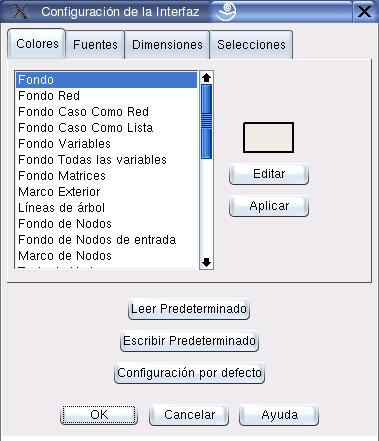

Configuración de la Interfaz Gráfica
La interfaz gráfica es altamente configurable. El cuadro de diálogo que muestra la figura 10.1 se emplea para seleccionar los parámetros que definen la presentación de la interfaz gráfica. Para acceder a él se debe ejecutar la secuencia de pasos:
Proyecto  Opciones de configuración
Opciones de configuración
El programa permite la configuración de los siguientes tipos de parámetros:
- Colores:
- Colores empleados para distinguir tipos de vista y tipos de datos.
- Fuentes:
- Tipos de fuente para la letra.
- Dimensiones:
- Geometría de la red y de las tablas.
- Selecciones:
- Opciones de configuración.
Figura 10.1:
Diálogo para configuración de la interfaz gráfica
|

|
Oscar Duarte
2005-10-17